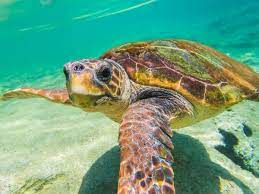
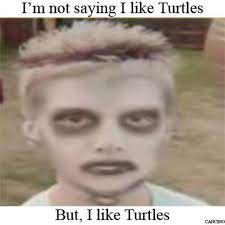
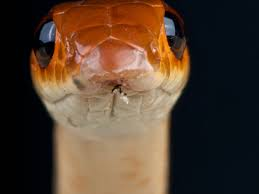

Animal Wiki
Let's learn about some awesome animals!
Turtles!
Sea turtles (superfamily Chelonioidea), sometimes called marine turtles,[3] are reptiles of the order Testudines and of the suborder Cryptodira. The seven existing species of sea turtles are the green sea turtle, loggerhead sea turtle, Kemp's ridley sea turtle, olive ridley sea turtle, hawksbill sea turtle, flatback sea turtle, and leatherback sea turtle.[4] All six of the sea turtle species present in US waters (loggerhead, green sea turtle, hawksbill, Kemp's ridley, olive ridley, and leatherback) are listed as endangered and/or threatened under the Endangered Species Act.[5] The seventh sea turtle species is the Flatback, which exists in the waters of Australia, Papua New Guinea and Indonesia.[5] Sea turtles can be separated into the categories of hard-shelled (cheloniid) and leathery-shelled (dermochelyid).[6] There is only one dermochelyid species which is the leatherback sea turtle.
Snakes!
Snakes are elongated, limbless, carnivorous reptiles of the suborder Serpentes. Like all other squamates, snakes are ectothermic, amniote vertebrates covered in overlapping scales. Many species of snakes have skulls with several more joints than their lizard ancestors, enabling them to swallow prey much larger than their heads with their highly mobile jaws. To accommodate their narrow bodies, snakes' paired organs (such as kidneys) appear one in front of the other instead of side by side, and most have only one functional lung. Some species retain a pelvic girdle with a pair of vestigial claws on either side of the cloaca.
Alligators!

An alligator is a crocodilian in the genus Alligator of the family Alligatoridae. The two extant species are the American alligator and the Chinese alligator. Additionally, several extinct species of alligator are known from fossil remains. Alligators first appeared during the Oligocene epoch about 37 million years ago. The name "alligator" is probably an anglicized form of el lagarto, the Spanish term for "the lizard", which early Spanish explorers and settlers in Florida called the alligator. Later English spellings of the name included allagarta and alagarto.